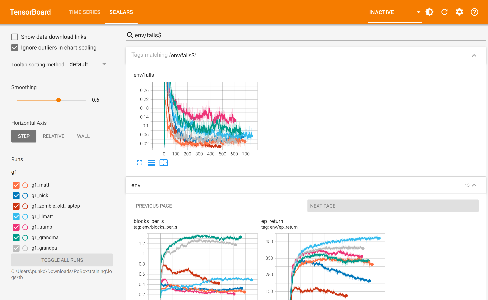
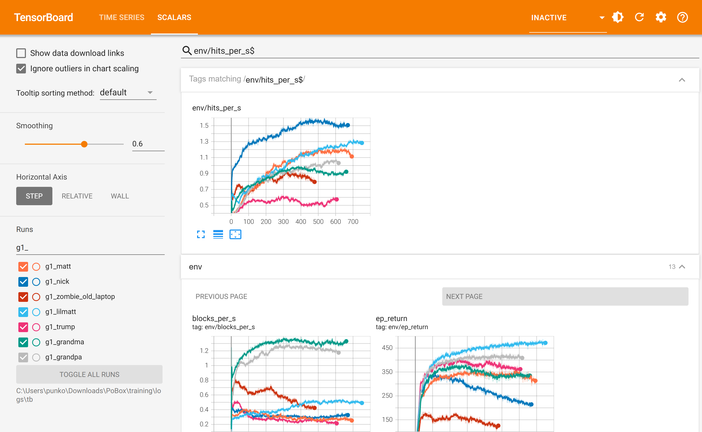
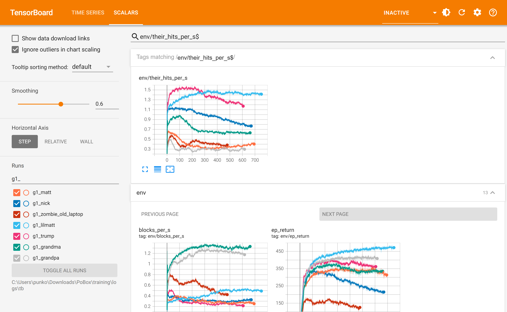

PoBox: the gauntlets, first pass
2 October 2026, 13:10 to 16:53, on the new laptop (RTX 5070 Ti Laptop GPU) · six boxers, 36 minutes each · what the charts say, what the exam says, what went wrong
A gauntlet is one boxer learning against all six others at once, none of whom is learning. Zombie had his on the old laptop before the move. Today Matt, Nick, Lil Matt, Trump, Grandma and Grandpa had theirs, one after another, each meeting the already-finished policies of those before it. Nobody passes the whole exam yet. Footing, which all seven failed after the league, now fails for four, and by much less. The line that now fails most is carrying on after a get-up: six of seven.
The exam after the first pass
All 21 pairings in plain C MuJoCo, without training noise, three 45-second rounds each and 40 knockdowns per boxer
(training/logs/exam_1.log, copied to training/handoff/).
| Boxer | Footing | Attack | Guard | Chin | Getting up | Carrying on |
|---|---|---|---|---|---|---|
| Zombie 1 line failed | FAIL 0.89 falls a minute at worst | pass 0.78 a second at 7.4 m/s | pass stops 98% of what comes at its head (0.59 blocks a second), takes 0.04 head shots a second | pass legs taken 0.00 a minute (worst 0.00) | pass 40 of 40 knockdowns, in 1.6 s on average | pass 39 of 40 still up 3 s after the match policy took over |
| Matt 2 lines failed | FAIL 3.11 falls a minute at worst | pass 1.26 a second at 5.7 m/s | pass stops 34% of what comes at its head (0.38 blocks a second), takes 0.27 head shots a second | pass legs taken 0.22 a minute (worst 1.33) | pass 40 of 40 knockdowns, in 1.3 s on average | FAIL 19 of 40 still up 3 s after the match policy took over |
| Nick 2 lines failed | FAIL 1.33 falls a minute at worst | pass 1.43 a second at 5.5 m/s | not judged stops 56% of what comes at its head (0.76 blocks a second), takes 0.69 head shots a second; built without a guard | pass legs taken 0.00 a minute (worst 0.00) | pass 40 of 40 knockdowns, in 2.0 s on average | FAIL 35 of 40 still up 3 s after the match policy took over |
| Lil Matt 4 lines failed | FAIL 1.33 falls a minute at worst | pass 0.89 a second at 7.0 m/s | FAIL stops 12% of what comes at its head (0.21 blocks a second), takes 1.08 head shots a second | FAIL legs taken 1.56 a minute (worst 7.56) | pass 40 of 40 knockdowns, in 1.6 s on average | FAIL 31 of 40 still up 3 s after the match policy took over |
| Trump 2 lines failed | pass 0.00 falls a minute at worst | pass 0.54 a second at 6.2 m/s | not judged stops 18% of what comes at its head (0.15 blocks a second), takes 0.83 head shots a second; built without a guard | FAIL legs taken 2.07 a minute (worst 11.11) | pass 40 of 40 knockdowns, in 2.0 s on average | FAIL 32 of 40 still up 3 s after the match policy took over |
| Grandma 1 line failed | pass 0.00 falls a minute at worst | pass 1.07 a second at 5.2 m/s | pass stops 73% of what comes at its head (1.49 blocks a second), takes 0.52 head shots a second | pass legs taken 0.00 a minute (worst 0.00) | pass 26 of 40 knockdowns, in 3.7 s on average | FAIL 17 of 26 still up 3 s after the match policy took over |
| Grandpa 1 line failed | pass 0.00 falls a minute at worst | pass 1.20 a second at 5.7 m/s | pass stops 86% of what comes at its head (1.33 blocks a second), takes 0.18 head shots a second | pass legs taken 0.00 a minute (worst 0.00) | pass 29 of 40 knockdowns, in 3.2 s on average | FAIL 21 of 29 still up 3 s after the match policy took over |
The same lines before any gauntlet (the exam after the league, 07:20)
| Boxer | Footing | Attack | Guard | Chin |
|---|---|---|---|---|
| Zombie | FAIL 5.67 falls a minute at worst | pass 0.90 a second at 6.0 m/s | pass stops 99% of what comes at its head (0.91 blocks a second), takes 0.01 head shots a second | pass legs taken 0.00 a minute (worst 0.00) |
| Matt | FAIL 1.00 falls a minute at worst | FAIL 0.44 a second at 4.4 m/s | pass stops 51% of what comes at its head (0.24 blocks a second), takes 0.26 head shots a second | pass legs taken 0.22 a minute (worst 1.33) |
| Nick | FAIL 2.33 falls a minute at worst | pass 1.20 a second at 5.7 m/s | not judged stops 43% of what comes at its head (0.38 blocks a second), takes 0.57 head shots a second; built without a guard | pass legs taken 0.00 a minute (worst 0.00) |
| Lil Matt | FAIL 1.33 falls a minute at worst | pass 0.89 a second at 5.6 m/s | FAIL stops 27% of what comes at its head (0.16 blocks a second), takes 0.95 head shots a second | pass legs taken 0.44 a minute (worst 2.67) |
| Trump | FAIL 1.67 falls a minute at worst | pass 0.53 a second at 5.1 m/s | not judged stops 52% of what comes at its head (0.33 blocks a second), takes 0.77 head shots a second; built without a guard | pass legs taken 1.00 a minute (worst 3.00) |
| Grandma | FAIL 2.67 falls a minute at worst | pass 0.70 a second at 5.5 m/s | pass stops 83% of what comes at its head (1.18 blocks a second), takes 0.24 head shots a second | pass legs taken 0.00 a minute (worst 0.00) |
| Grandpa | FAIL 2.67 falls a minute at worst | pass 0.65 a second at 3.8 m/s | pass stops 82% of what comes at its head (0.91 blocks a second), takes 0.04 head shots a second | pass legs taken 0.11 a minute (worst 0.67) |
Zombie passed all six lines straight after his own gauntlet (exam_zombie_g1.json: 0.00 falls a minute at worst).
He fails footing now only because Nick has changed: 0.89 falls a minute against the new Nick, none against anybody else.
That is the weakness of doing the boxers one after another: each run moves an opponent the others were already measured against.
The three charts that matter
TensorBoard, http://localhost:6006, the SCALARS page. Each line is one boxer's gauntlet: orange Matt, dark blue Nick, light blue Lil Matt, pink Trump, green Grandma, grey Grandpa. Dark red is the earlier run to compare with, Zombie's gauntlet on the old laptop. Across is training iterations from the start of each run.
1. How often the learner ends up on the floor (env/falls)

2. Punches the learner lands a second (env/hits_per_s)

3. Punches the learner takes a second (env/their_hits_per_s)

Compared with the earlier run
| Zombie's gauntlet, old laptop (RTX 2060) | Today's six, new laptop (RTX 5070 Ti Laptop) | |
|---|---|---|
| Rings | 2,304 | 4,608 |
| Speed | about 13,300 steps a second | about 35,000 (Matt 36,400, Nick 35,100) |
| Training in 36 minutes | 480 iterations, 27 million steps | 607 to 752 iterations, 67 to 83 million steps |
| Learner's falls, start to end | 43% to 1% | 18 to 72%, down to 3 to 13% |
| Punches landed a second at the end | 0.81 | 0.58 (Trump) to 1.50 (Nick) |
| Exam straight afterwards | passed all six lines | nobody passes all six; one to four lines failed each |
What went wrong
p1_matt): it died of a GPU fault after five minutes, and the 100 iterations it saved changed nothing, so it is marked rejected.What happens next
A second round was started at 17:04 and stopped at 17:09, five minutes into its first run. The game is being
retrofitted onto new bodies (tasks.md), so these policies will not be examined in the game as they
are: the plan uses them as warm starts for the boxing rungs on the new bodies (C7), and the exam is taken again there.
Another four hours spent getting the old bodies through the old exam would have bought little and kept the GPU from the retrofit.
The six first-round policies are training/checkpoints/g1_<name> and training/logs/policies.json points at them;
Zombie's is his earlier one. What a second round should change, when boxing is trained on the new bodies: more episodes that start from a get-up
(carrying on fails for six of seven), more rings against whoever a boxer fails against, and a check without noise before a run is called done.